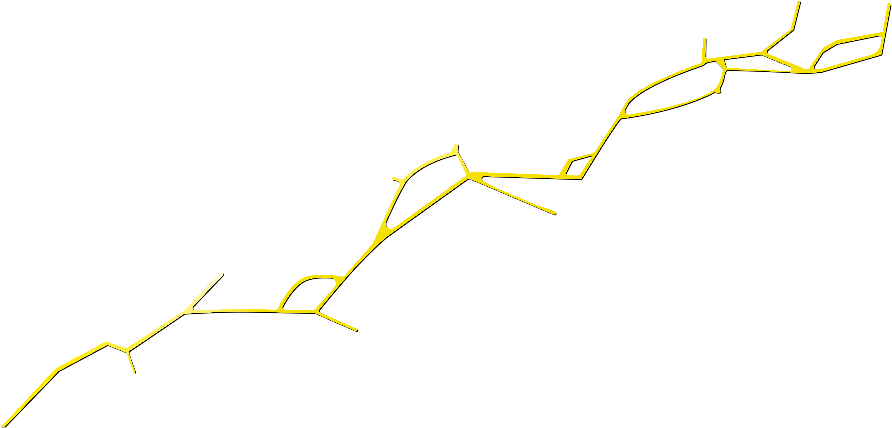

Operational Streamlining
Having the benefit of an impartial view of our business enables us to identify hidden inefficiencies, optimise role design and implement cost-saving strategies that reduce overheads whilst strengthening operational output.

Kintsugi delivers targeted strategies that target workforce costs, enhance profitability and accelerate commercial growth.
Having the benefit of an impartial view of our business enables us to identify hidden inefficiencies, optimise role design and implement cost-saving strategies that reduce overheads whilst strengthening operational output.
From pipeline acceleration to market positioning, we guide you through the strategies that drive commercial performance. Our advisory approach blends data, experience and proven frameworks to help you generate revenue more efficiently.
Every business has a destination. Kintsugi helps clarify the route, reducing employment overheads, building valuable partnerships, and identifying opportunities for growth.
Some goals become more achievable with the right people alongside you. We connect you with the right partners to reduce internal burden, and guide you to a more profitable future.
We analyse your current operating model, uncover bottlenecks, and redesign processes to deliver measurable improvements in productivity, cost control, and organisational agility.
Growth doesn't have to mean more overhead. We help businesses scale intelligently by aligning people, processes, and partnerships to deliver sustainable profit.
Our methodologies help organisations maintain high performance with optimised staffing models, ensuring you get more output from your investment.
Talk to us about how Kintsugi can reduce your overhead, strengthen your partnerships and unlock smarter, sustainable growth.
Book a consultation